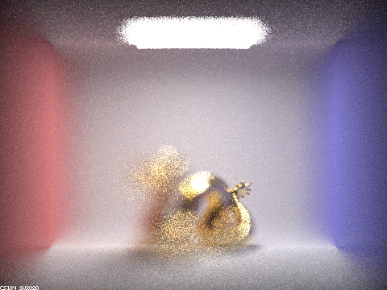

Project 3-2 Write-Up
Website: https://evelynwu88.github.io/cs184-proj3-2-website/
Overview
For this project, we chose to implement Part 1: Mirror and Glass Materials, and Part 4: Depth of Field. For Part 1, we implemented reflection and refraction and sample_f for both mirror and glass materials. In Part 4, we implemented depth of field by simulating thin lens. This allows us to focus on different areas of the scene, instead of focusing on every part of the scene like in a pinhole camera. Some of the difficulties we encountered are passing in the the wrong arguments to render our results, where we tried to debug for a long time but realized our code was correct in the end.
Task 1
Summary of Implementation
Mirror Material:
For mirror material, we first implemented the reflect function that reflects wo vector around axis [0, 0, 1] by negating the x and y posiyions of wo and assigning that to *wi. For mirror’s sample_f function, we simply called reflect, set the pdf to 1, and returned reflectance / abs_cos_theta(*wi).
Glass material:
For glass material, we first implemented refract function that refracts the wo vector into a wi vector. To do this, we checked if we are refracting from inside or outside of the object, thereby adjusting our index of refraction and applying the Snell’s law. In the case of total internal reflection, we returned false and the wi vector is unused. In glass’s sample_f function, we check if there is internal reflection by calling the refract function. If there is, then we reflect and set pdf = 1. Otherwise, we use Schlick’s approximation to calculate an R, such that with probability R we will reflect (otherwise we refract). We then call the corresponding helper functions to model reflection and refraction.
Show a sequence of six images of scene CBspheres.dae rendered with max_ray_depth set to 0, 1, 2, 3, 4, 5, and 100. The other settings should be at least 64 samples per pixel and 4 samples per light. Point out the new multibounce effects that appear in each image. Explain how these bounce numbers relate to the particular effects that appear.
0 bounce:
If we set the maximum ray depth to be 0, we only see the light source on the ceiling and nothing else in the room, because we are not allowing any bounce of light.
1 bounce:
As m = 1, we are allowing 1 bounce of light. We have direct lighting, but we don’t see any color on either materials. This is because glass and mirror do not emit any colors, they only reflect or refract rays from the surroundings.
2 bounce:
As m = 2 and we allow 2 bounces of light, we see the reflections on the two ball. Since the left ball is mirror material, its reflection is more vivid, whereas we could only see a bit of reflection on the glass ball. Notice that the reflection depicts an image from the previous bounce, when the ceiling is still dark. In addtion, at this point, light has been refracted into the glass ball, but no light has been refracted out, which explains why it is mostly dark.
3 bounce:
As m = 3 and we allow 3 bounces of light, the overall scene looks increasingly brighter as we increase the maximum ray depth. In addition, the glass sphere now also has color, as it takes exactly 3 bounces for light to hit it, refract into it, and refract out of it. We can also see that the area beneath the glass sphere has been lit up.
4 bounce:
As m = 4 and we allow 4 bounces of light, the bottom of the glass ball has grown even brighter. In addition, we see that the blue wall on the right have a small portion being lit up by the glass sphere. This is due to more bounces of light reflecting between the floor and sphere and the wall and sphere.
5 bounce:
As m = 5, the appearance of both spheres seem to start converging. We can see the reflection in the mirror ball being brighter, as the overall surroundings increasingly become brighter with every bounce. We also see the bottom of glass ball being brighter and a bit noisier due to many reflection and refraction bounces.
100 bounce:
With 100 bounces of light, the overall scene appears very similar to the one with 5 bounces, but overall brighter. Most rays have been terminated by Russian Roulette at this point and beyond.
Task 4
Summary of Implementation
We first found the bottom left and top right of the image plane and used that to figure out the direction of the red ray, which is the original ray before any refraction happens. Then we used rndR, rndTheta, and lensRadius get a sample of the point on the thin lens. pFocus then becomes the red ray's direction scaled by the focalDistance. Using pFocus and pLens, we can figure out the direction of the ray after it refracts (this is the direction of the blue ray). We transformed this vector into the world space and constructed a ray with that direction. For the starting point of that ray, we transformed pLens into the world space and added the current position. This ray is then returned.
1. In a few sentences, explain the differences between a pinhole camera model and a thin-lens camera model.
A pinhole camera model makes the entire image look focused. A thin-lens camera model only makes some parts of the image look focused, which is more realistic. Depending on the focal distance and the lens radius, the area of the rendered image that is focused could vary in size and position. This is because in a pinhole camera model just shoots a ray straight to some location without any direction changing in the middle. In a thin-lens camera model, once the ray reaches the thin-lens, it could refract and change direction, causing the area/position of focus to vary.
2. Show a "focus stack" where you focus at 4 visibly different depths through a scene.
The following images all have lens radius of 1.23 but with varying focal distances. As the focal distance increases, we can see that the area of focus on the dragon is moving towards the back of the scene.
Depth = 4.6:
Depth = 4.7:
Depth = 4.9:
Depth = 5.1:

3. Show a sequence of 4 pictures with visibly different aperture sizes, all focused at the same point in a scene.
The following images all have focal distance of 4.56 but with varying lens radius. As the radius of the lens increases, we can see that the amount of area that is focused decreases.
Radius = 0.1:
Radius = 0.3:
Radius = 0.5:
Radius = 1.0:
Working with a Partner
We pair programmed the entire project together. For Part 1, Joy was the "driver" in the pair programming and for Part 4, Evelyn was the "driver". It went well because we were both very involved in each part of the project and we were able to learn and understand our tasks.